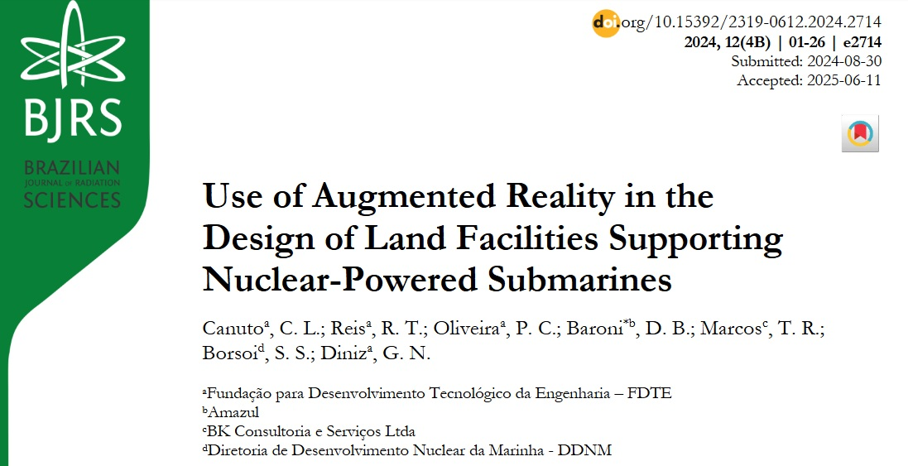
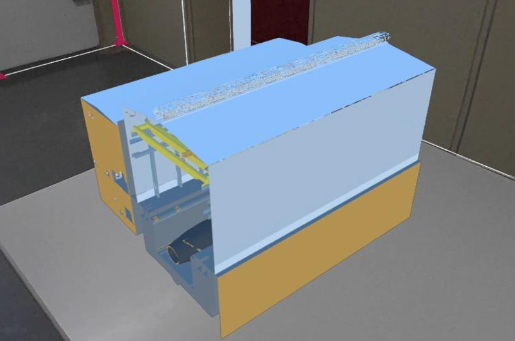
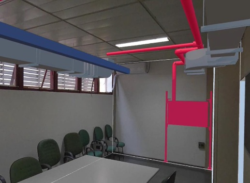
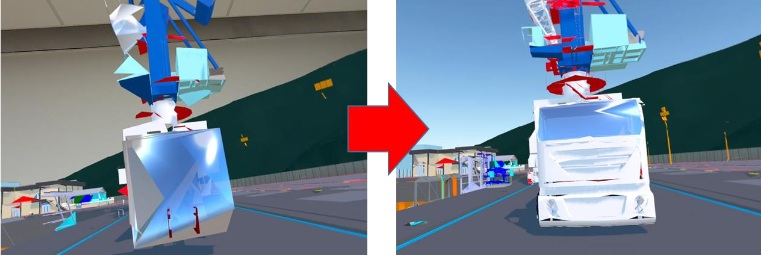

Augmented Reality Study – Professional Research
Applied Augmented Reality (AR) research focused on industrial and engineering use cases, including visualization, validation, and interaction with complex 3D models. The study was conducted using a Meta Quest 3 and a high-performance workstation, evaluating different tools and workflows for real-world deployment.
Key Findings & Technical Insights
Unity vs Arkio: Arkio proved more efficient for most visualization workflows, offering faster setup and a more intuitive user experience. However, Unity provided greater flexibility, enabling deeper customization and advanced features required for more complex AR applications.
Cross-Platform AR Deployment: In addition to standalone AR on Meta Quest 3, the team developed mobile versions using Unity, generating APK builds for smartphones and tablets. This allowed testing AR experiences across different hardware constraints and use cases.
Image Recognition (Unity): Unity enabled AR experiences triggered from printed images or predefined markers, using multiple SDK integrations for tracking, anchoring, and interaction.
SDK Integration: A combination of AR/XR SDKs was used to support tracking, rendering, and real-time interaction, requiring careful integration and testing across platforms.
Hardware & Performance Context: Experiments were conducted using Meta Quest 3 and a high-performance PC, while mobile deployments required optimization to balance visual fidelity and real-time responsiveness.
Applications
3D Model Visualization: Interactive AR models used for spatial understanding and engineering analysis.

Industrial Validation: Detection of inconsistencies in complex installations (e.g., piping systems), applicable to nuclear, industrial, and civil engineering contexts.

Technical Challenges
High Polygon Count: Complex models introduced performance bottlenecks and slow loading times.
Rendering Instability: Large meshes caused temporary deformation and visual distortion during initialization.
Performance Trade-offs: Balancing model fidelity and real-time responsiveness was critical for usability.
